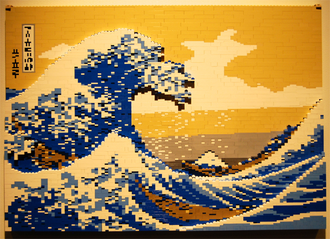

Here is a selection of some of Cameron's favorite creations he has made from Lego.
|

A reproduction of "The Great Wave off Kanagawa" by Katsushika Hokusai from the 19th Century. |
As said on previously, all these Lego creations are actually by Nathan Sawaya!